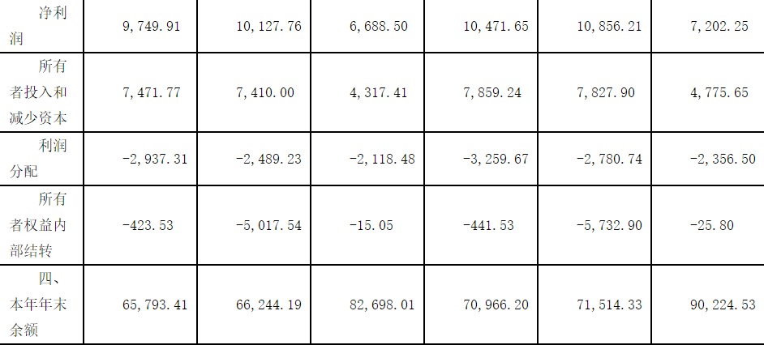

财政部会计司
我国上市公司2009年执行企业会计准则情况分析报告
——基于企业会计准则实施的经济效果
截至2010年4月30日，沪深两市共计1,774家上市公司如期披露了2009年年报，其中沪市873家，深市主板485家，中小板358家，创业板58家。1,774家上市公司中，非金融类上市公司1,744家，金融类上市公司30家。1,774家上市公司资产总额合计为618,970.73亿元，较2008年同比（下同）增长24.32%；净资产合计为93,544.82亿元，同比增长16.60%。实现利润总额合计为14,466.39亿元，同比增加3,135.18亿元，增长27.67%；净利润合计为11,322.25亿元，同比增加2,381.55亿元，增长26.64%。可见，2009年上市公司业绩与整体经济运行状况是协调的，体现了我国应对国际金融危机走出低谷和经济企稳回升向好的态势，宏观经济政策发挥了重要作用。同时，企业会计准则在我国上市公司有效实施已有三年历史，会计准则实施的经济效果已经凸显。自上市公司披露了2009年首份年报起，我们从会计准则实施的经济效果角度，跟踪并深度分析了上市公司2009年年报，形成了本分析报告。
一、企业会计准则规定的若干系列会计政策，有效地促进了上市公司的可持续发展
上市公司是我国经济社会发展中的重要主体。贯彻落实科学发展观，提升企业发展质量，实现可持续健康发展，是我国一贯坚持的指导方针。企业会计准则的建设实施与趋同等效，始终贯彻了这一重要原则。
（一）企业会计准则规定的相关会计政策，有效地限制了企业的短期行为。
资产减值会计准则规定了减值政策，要求企业的各项资产包括流动资产、固定资产、无形资产等，均应如实反映其真实价值，防止资产价值泡沫导致利润虚增；同时规定，长期资产计提的减值损失不得转回。2006年上市公司计提的资产减值损失为442.70亿元，2007年会计准则实施后，三年计提的资产减值损失分别为1,432.64亿元、3,963.48亿元和1,689.67亿元，三年平均计提的资产减值损失为2,361.93亿元，与会计准则实施前2006年计提的资产减值损失442.70亿元相比，增长了4.34倍，大幅度地挤掉了上市公司各项资产中的水分，为企业发展增强了后劲。沪深两市上市公司三年中基本上杜绝了长期资产减值损失转回的情况，有效地扼制了一些企业利用资产减值损失转回操纵利润的行为。
或有事项会计准则规定，企业对于未决诉讼、债务担保、产品质量保证、亏损合同、重组义务等存在的风险，应当根据损失发生的可能性，预计相关损失并冲减当期利润，这在很大程度上避免了企业超前分配利润问题。2009年，1,774家上市公司中有976家公司存在或有事项，确认的预计损失为504.59亿元，三年平均确认的预计损失为180.93亿元，比2006年确认的预计损失69.12亿元增加了111.81亿元，增长了1.62倍。
长期股权投资会计准则将母公司对子公司的投资核算方法统一改为成本法，避免了母公司在没有现金流入的情况下分配利润而导致现金流出，从而有效地防范了企业资金链断裂的风险。分析表明，2006年母公司从子公司取得的投资收益为2,113.98亿元，会计准则改为成本法核算后，三年间母公司从子公司取得的投资收益分别为694.32亿元、1,155.79亿元和1,332.28亿元，投资收益的平均值为1,060.80亿元，比2006年减少了1,053.18亿元，下降了近50%。虽然，投资收益大幅度下降可能有较多因素所致，权益法改为成本法是其中的重要因素，但可以确定的是，会计准则实施后的投资收益是具有实际现金流入的，从而增强了企业的发展后劲。
（二）企业会计准则规定的相关会计政策，从根本上改变了产品成本中人工成本的构成，有效地发挥了人力资源在企业发展中的重要作用。
会计准则实施前，企业产品成本构成中的人工成本仅限于工资和福利费，其他属于人工成本的内容没有包括其中。根据职工薪酬会计准则和股份支付会计准则规定，企业产品成本中的人工成本不仅包括工资和福利费，重要的是将凡属于对职工的支付全部计入人工成本，包括劳动报酬、社会保险、货币性福利与非货币性福利、教育、劳动保护、住房和其他人工费用等。
我国产品成本历来由料、工、费构成，其中原材料成本所占比重最大，一般在70%左右。会计准则实施后，绝大多数企业尤其是科技含量较高、专业技术人员较多的企业，产品成本构成中人工成本翻了一番居于首位，成为产品成本的主要组成部分。2009年沪深两市上市公司实施股份支付计划的已有50家，主要集中在制造业、信息技术业、电子业和医药业等行业，2009年因股票期权公允价值计量确认的费用为8.91亿元。
上述会计政策的应用，贯彻了以人为本的原则和理念，突出了人力资源在企业发展中的重要作用，有助于调动全体员工的积极性和创造性，激发人力资源的潜能，不仅如此，调整后的产品成本构成与发达国家的产品成本构成实现了趋同，为我国企业在国际贸易中防止反倾销调查奠定了产品成本基础。
（三）企业会计准则规定的相关会计政策，促进了石油天然气等资源型企业足额预计弃置费用，为企业履行环境保护和生态恢复义务做出了制度安排。
弃置费用通常是指根据国家法律和行政法规、国际公约等规定，企业承担的环境保护和生态恢复等义务所确定的支出，如油气资产、核电设施等的弃置和恢复环境义务。油井、核电设施等弃置支出巨大，有时甚至相当于开采或建设支出。会计准则实施前，石油天然气等资源型企业在生产经营期间不预计弃置费用，而是在实际发生时据实列支，导致此类企业在油井、核电设施弃置前实现巨额利润，在实际弃置时缺乏资金支持，其结果是提前消耗了本属于子孙后代的资源。会计准则实施后，2007年9家上市公司计提弃置费用86.60亿元，2008年12家上市公司计提弃置费用138.56亿元，2009年18家上市公司计提弃置费用115.79亿元，三年合计计提弃置费用340.95亿元。这一制度安排有效地解决了此类企业提前耗费子孙后代资源的问题，为企业履行环境保护和生态恢复义务提供了制度保障。
（四）企业会计准则规定的相关会计政策，支持了企业加大研发投入和自主创新。
会计准则实施前，企业的研发支出全部冲减当期利润，企业通常难以承受，直接影响了企业研发投入和自主创新的积极性。无形资产会计准则规定，企业开发阶段支出符合条件的应当资本化，作为企业的无形资产。企业无形资产的不断增加，体现了企业发展方式的转变，有助于提升企业的发展质量。会计准则实施三年来，上市公司自主开发支出资本化的金额分别为27.21亿元、75.32亿元和104.17亿元，呈现出了逐年增长的趋势，三年平均开发支出达到了68.90亿元，平均增长了153.22%，反映出开发支出资本化政策的积极效果。
（五）企业会计准则坚持以历史成本为基础，谨慎引入公允价值，有效地避免了公允价值计量对我国企业和资本市场的不利影响。
企业会计准则引入了公允价值，但是，考虑到我国新兴市场和转型经济的实际情况，坚持了以历史成本为基础，对公允价值的使用规定了严格的限制条件。在我国，企业采用公允价值计量主要集中在股票、债券、基金、投资性房地产和企业并购重组等方面。会计准则实施三年来，上市公司将持有的股票、债券、基金大部分划分为可供出售金融资产或持有至到期投资，划分为交易性金融资产所占比重很小。2007年可供出售金融资产和持有至到期投资的金额分别为32,083.29亿元和41,008.02亿元，占比为94%，交易性金融资产仅有4,894.29亿元，占比为6%。2008年可供出售金融资产和持有至到期投资的金额分别为34,583.74亿元和39,982.11亿元，占比为94%，交易性金融资产仅有5,080.27亿元，占比为6%。2009年可供出售金融资产和持有至到期投资的金额分别为41,641.18亿元和40,564.09亿元，占比为97%，交易性金融资产仅有2,407.96亿元，占比为3%。可供出售金融资产采用公允价值计量，但公允价值的变动计入所有者权益，直到处置时才计入当期损益，从而避免了公允价值波动对企业当期损益的不利影响。三年间，存在投资性房地产的上市公司分别为630家、690家和772家，绝大部分采用成本模式计量，采用公允价值模式计量的极少，三年分别为18家、20家和25家。在非同一控制下的企业合并中，会计准则谨慎地确定合并中的公允价值，有效地扼制了企业确认巨额商誉的行为，避免了非同一控制下的企业合并产生巨额商誉给企业持续经营和发展带来的不利影响。
（六）企业会计准则规定的相关会计政策，为我国金融创新和发展虚拟经济做好了制度准备。
金融是现代经济的核心。积极开展金融创新和发展虚拟经济，通过市场手段合理配置社会资源，发挥虚拟经济对实体经济的促进作用是现代经济社会发展的必然要求。会计准则着力于金融创新和发展虚拟经济，全面系统地规定了金融资产和金融负债、金融资产转移、套期保值、原保险合同、再保险合同、企业年金基金、租赁等各项会计政策。其中，金融资产转移会计准则为我国有序开展资产证券化提供了政策支持；套期保值会计准则为企业合理规避外汇风险、利率风险、商品价格风险、股票价格风险、信用风险等提供了政策支持；保险合同会计准则为促进保险行业的结构调整提供了政策支持；企业年金基金会计准则为发展我国基金业提供了政策支持。会计准则从会计政策方面奠定了我国金融创新和发展虚拟经济做好了制度准备。
二、企业会计准则统一了财务报告的格式和披露要求，提升了企业会计信息质量，有效地促进了我国资本市场的完善和发展
财务报告是综合反映企业业绩、评估企业价值和预测企业未来的报告文件，有助于财务报告使用者做出相关决策。投资者通过财务报告可以做出投资决策，债权人通过财务报告可以做出信贷决策，企业管理者通过财务报告可以做出管理和企业发展决策，政府部门通过财务报告可以做出宏观经济决策。会计准则全面提升了企业会计信息质量，为完善和发展我国资本市场发挥了重要作用。
（一）企业会计准则统一规范了财务报告体系。
在1项基本准则、38项具体准则及其应用指南构成的企业会计准则体系中，每一项确认计量准则都规定了应向财务报告使用者披露的会计信息，同时建立了财务报告列报、现金流量表、中期财务报告、合并财务报表、每股收益、分部报告、关联方披露和金融工具列报等报告类准则。会计准则规定的财务报告体系主要由两大部分构成，一是财务报表格式，包括资产负债表、利润表、现金流量表、所有者权益变动表和合并资产负债表、合并利润表、合并现金流量表、合并所有者权益变动表；二是附注，附注是财务报表的重要组成部分，是对在资产负债表、利润表、现金流量表和所有者权益变动表等报表中列示项目的文字描述或明细资料，以及未能在这些报表中列示项目的说明等，主要包括企业的基本情况、财务报表的编制基础、遵循企业会计准则的声明、重要会计政策和会计估计、会计政策和会计估计变更以及差错更正的说明、报表重要项目的说明、或有事项、资产负债表日后事项和关联方关系及其交易等。存在子公司的母公司应当同时编制合并财务报表和个别财务报表。从而形成纵横交错、结构严谨、格式统一、内涵一致、信息可比的财务报告体系。会计准则实施三年来，所有上市公司都按照会计准则统一规定的财务报告格式和要求向报告使用者公开披露了财务报告。2007年1,570家上市公司、2008年1,624家上市公司和2009 年1,774家上市公司的汇总合并资产负债表、合并利润表、合并现金流量表、合并所有者权益变动表的简表分别见表1、表2、表3和表4。除此之外，上市公司基本上能够较好地按照企业会计准则的规定在财务报表附注中披露了相关信息。比如，绝大多数上市公司都按照固定资产会计准则的规定在财务报表附注中披露了固定资产期初余额、期末余额、固定资产构成、固定资产减值准备、累计折旧、处置情况、是否存在固定资产折旧计提方法和折旧年限的会计估计变更等相关信息。财务报表中其他重要项目也都以附表形式在附注中作了充分披露。
（二）财务报告中的数据均以企业会计准则执行为基础，并依照会计法规定由单位负责人签字盖章，对财务报告的真实性和完整性负责。
会计准则实施三年来，从2007年1,570家上市公司、2008年1,624家上市公司到2009年1,774家上市公司，每一家上市公司的财务报告都是以企业会计准则的执行为基础编报的。从2007年1月1日新旧会计准则实现平稳过渡后，上市公司按照企业会计准则的规定统一了各项确认计量的会计政策。这些会计政策具体落实到企业会计凭证的填制、会计账簿的登记和报表的编制整个账务处理系统的全过程。最终形成的财务报告经过了单位负责人签字盖章，依法要求单位负责人对财务报告的真实性和完整性负责，财务报告正式报出之前，依法经过了注册会计师的审计鉴证。由此可见，按照以上程序形成的财务报告所反映的企业业绩和价值是真实的、可信的、全面的，从内涵上提升了企业会计信息质量。同时也表明，我国执行企业会计准则不是仅限于报表层面，而是贯穿于到企业交易和事项会计处理的各个环节。这是我国会计准则实施区别于其他一些国家的重要标志，也是提升企业会计信息质量的根本所在。
（三）上市公司会计政策的应用和财务报告的编制大多通过软件系统得以实现，从手段上提升了会计准则实施的质量和效率。
上市公司执行企业会计准则统一规定的各项会计政策和财务报告体系，大多是通过ERP等软件系统来实现的，具体固化为各种账务处理模块和子系统，其中包括诸如生产成本的归集与分配、资产减值的核算、摊余成本的计算、实际利率的应用、未来现金流量的折现、企业并购重组的完成、合并财务报表的编制等等，从而将企业发生的全部交易和事项严格按照会计会计准则的规定转化为ERP等软件系统中的会计信息，最终自动生成了格式规范、内容完整、数据准确的财务报告，提高了上市公司会计准则实施的质量和效率。
需要进一步说明的是，通过软件系统实现的会计准则的有效实施以及财务报告的指标体系，无论从形式上还是内涵上都具有可比性的特征，从而实现了不同企业之间、金融企业与非金融企业之间、同一企业不同会计期间之间会计信息的相互可比，这也是提升企业会计信息质量的重要体现。
总之，对于在企业会计准则基础上形成的财务报告，财务报告使用者只要认真、全面、深度进行了阅读，就可以综合了解企业的偿债能力、营运能力、盈利能力、发展能力和企业成长性等情况，基本上可以做到理性投资、科学决策和强化管理，有效地促进了资本市场的完善和发展。
表1：汇总合并资产负债表（简表）
单位：亿元
表2：汇总合并利润表（简表）
单位：亿元
表3：汇总合并现金流量表（简表）
单位：亿元
表4：汇总合并所有者权益变动表（简表）
单位：亿元

三、企业会计准则的有效实施不仅经受了上市公司的实践检验，也通过了世界银行、欧盟等国际方面的评估验证，在会计上为促进我国企业“走出去”创造了条件
（一）企业会计准则的有效实施和等效认可最初是从我国香港开始的。
2007年1月1日新旧会计准则实现平稳过渡后，我们即与香港启动了两地会计准则等效的工作，因为香港属于直接采用国际准则的地区。经过双方近一年的共同努力，2007年12月6日，中国会计准则委员会与香港会计师公会签署了《内地准则与香港准则等效的联合声明》，随即两地又联合国际会计准则理事会建立了三方会计准则持续等效工作机制，不断巩固会计准则国际趋同等效成果。从2007年年报分析看，同时发行A股和H股的上市公司执行企业会计准则后在内地与香港披露的年报差异基本消除，2007年A+H股上市公司按照两地会计准则报告的净利润、净资产差异率分别为4.69%和2.84%。从2008年年报分析看，同时发行A股和H股的上市公司在内地与香港披露的年报差异接近于完全消除，2008年A+H股上市公司按照两地会计准则报告的净利润、净资产差异率分别仅为2.39%和0.96%，并且差异主要是保险公司的保费收入、保单取得成本和保险合同准备金差异。为此，财政部于2009年12月22日印发了《保险合同相关会计处理规定》（财会〔2009〕15号），对这三个问题进行了规范，取得了良好效果。2009年1,774家上市公司中共有61家A+H股上市公司。2009年年报分析表明，A+H股上市公司按照两地会计准则报告的净利润、净资产差异完全消除。内地准则与香港准则的等效，大幅度地降低了内地企业赴香港上市的财务报告编报成本和融资成本，有效地促进了内地企业赴港上市融资和两地资本市场的共同发展。
（二）中国企业会计准则得到了欧盟的等效认可。
早在2005年2月，中欧会计准则等效就列入了中欧财金对话议题，并于当年11月中国财政部与欧盟委员会签署了《会计准则国际趋同及双边合作联合声明》，在之后的2006年第二次中欧财金对话和2007年第三次中欧财金对话中都取得了实质性进展。在此期间，财政部会计司与欧盟内部市场和服务总司举行了若干次深入的高层次技术讨论和协商。欧盟委员会多次独立组织赴中国实地调研，考察企业会计准则在我国上市公司的执行情况，并研究了财政部会计司发布的《我国上市公司2007年执行新会计准则情况分析报告》，认为中国企业会计准则执行情况良好。2008年4月22日，欧盟委员会就欧盟第三国会计准则等效问题发布正式报告，在2011年底前，欧盟委员会允许中国证券发行者在进入欧洲市场时使用中国会计准则，不需要根据欧盟境内市场采用的国际财务报告准则调整财务报表。中国企业进入欧盟市场可以直接采用中国会计准则编制财务报告，有力地推动了我国企业贯彻落实中央“走出去”战略。我国沿海地区一些企业进入欧盟市场的实践表明，已经从我国企业会计准则得到欧盟等效认可中直接受益。
（三）世界银行对中国企业会计准则的有效实施给予了充分肯定。
截至目前，世界银行已对全球100多个国家进行了会计和审计评估，世界银行会计和审计评估的最终目的是为各国的会计和审计工作提出政策建议，以提高各国财务报告的质量、构建完善的财务报告体系；增强各国财务报告的透明度，维护市场秩序，增强金融部门稳定性；为发展资本市场、创造良好的投资环境、更有效地配置资源提供帮助，从而促进全球经济发展。世界银行会计和审计评估的基准是国际认可的标准，即国际财务报告准则和国际审计准则。评估主要包括两个层面：一是将被评国所采用的会计和审计标准与国际认可的标准进行比较，为缩小其与国际标准的差距提供改进建议；二是重点评估被评国会计和审计实务与该国所采用的会计和审计标准的符合程度。评估涉及该国的法律框架、会计和审计标准的制定与实施、会计职业界、会计人员的教育和培训等诸多方面，评估内容非常丰富，涉及的人员和单位众多。财政部高度重视世界银行中国会计和审计评估项目。2008年11月，由财政部牵头成立了评估国家指导委员会（NSC），财政部会计司承担了整个评估过程的协调和辅助工作，协助世界银行独立进行评估。世界银行经过为期一年的问卷调查和实地调研等系列评估工作，于2009年10月29日完成并在北京正式发布了《中国会计审计评估报告》，充分肯定了我国会计审计准则改革的成就，并称为可供其他国家仿效的良好典范。这是第一次由权威国际组织对我国会计审计准则建设、国际趋同以及有效实施情况独立进行的全面系统评估得出的结论。
四、企业会计准则的有效实施和国际趋同等效，促进了我国注册会计师行业的加快发展
注册会计师行业是市场经济发展中不可或缺的重要力量，对于鉴证会计信息质量、维护市场经济秩序具有至关重要的作用。会计准则是注册会计师重要的执业标准，企业会计准则的有效实施和国际趋同等效，促进了我国注册会计师行业的加快发展。
（一）企业会计准则的有效实施，有力地促进了我国注册会计师队伍整体素质的全面提升。
目前，我国会计师事务所有7,600多家，会计师事务所中拥有执业资格的注册会计师达到了9万人。随着企业会计准则在上市公司和非上市大中型企业的有效实施，要求广大注册会计师要掌握和运用会计准则，对上市公司和非上市企业进行审计鉴证和相关服务，并出具审计报告。其中，为上市公司审计的会计师事务所在我国实行特别准入和许可制度。到目前为止，特许为上市公司审计的会计师事务所有54家。从2007年至2009年，我国具有证券、期货相关业务资格的会计师事务所中，注册会计师人数从12,659增加至18,851人，由国内会计师事务所审计的上市公司数量逐渐增加，从1,471家上升至1,676家，占上市公司总数的94.48%。会计师事务所在执行审计业务时，严格遵循企业会计准则，坚持应有的职业谨慎，对上市公司的年报进行了系统而详实的审计。2007年至2009年三年来我国注册会计师对上市公司出具的审计报告情况（参见表5）表明，企业会计准则的有效实施，促进了我国注册会计师队伍的整体素质的全面提升，为我国注册会计师行业的发展奠定了人才基础。
表5：会计师事务所对我国上市公司年报出具的审计报告一览表
单位：家
（二）企业会计准则的有效实施与国际趋同，促进取消了上市公司的双重审计政策，实现了我国注册会计师行业的公平竞争和加快发展。
从2000年开始，基于我国会计准则体系尚未建成，也没有实现与国际趋同，认为我国注册会计师不懂国际准则，有关部门陆续出台了双重审计政策，规定金融类上市公司、一次发行量超过3亿（含3亿）股以上的公司以及发行境内上市外资股（B股）的公司，在法定审计之外应聘请国际会计师事务所进行补充审计。按照该项政策，上述公司即使聘请国内会计师事务所承接其审计业务，仍需由国际会计师事务所按照国际通行的会计审计准则进行补充审计，事实上使国际会计师事务所成为该类上市公司的首选，对国内会计师事务所的发展带来了不利的影响。
2005年我国建成了与国际趋同的企业会计准则体系，2006年2月15日正式发布，2007年1月1日起开始在我国所有上市公司和非上市大中型企业实施。在这一过程中，我国注册会计师奋起直追，不仅掌握了与国际趋同的会计准则，而且有能力运用会计准则开展审计业务。至此，双重审计政策已失去了继续存在的基础。在财政部的积极推动下，有关部门在2007年分步取消了双重审计政策。随着该项政策的消除，我国注册会计师行业实现了公平竞争，国内会计师事务所开始了B股业务和金融类上市公司的审计，执业范围得到了有力拓展，审计收入实现了大幅度增长，事务所实力得到了显著增强。从2007年至2009年，国内会计师事务所的审计业务收入从48.19亿元上升至80.21亿元，平均每年增长近33.23%。2007年后上市的金融类公司均聘请了国内会计师事务所进行审计。企业会计准则的有效实施与国际趋同，取消了双重审计政策，有力地促进了我国注册会计师行业的加快发展。
（三）企业会计准则的有效实施和等效认可，加快了我国会计师事务所的强强联合和优化整合。
在《关于内地企业会计准则与香港财务报告准则等效的联合声明》的推动下，财政部加快推进了符合认可要求的内地会计师事务所从事H股企业审计业务的进程，力求实现与香港注册会计师行业双赢，促进两地资本市场更加繁荣。2009年10月，国务院办公厅转发了《财政部关于加快发展我国注册会计师行业若干意见》（国办发〔2009〕56号），提出了会计事务所做大做强的目标。根据上述政策，国内会计师事务所加大了整合力度。此次优化整合呈现出与以往不同的显著特征，众多规模较大、实力较强的会计师事务所秉承着自愿整合的原则，积极采取强强联合的形式实现彻底合并。截至目前，我国证券资格会计师事务所由2002年的105家减少至54家，其中年收入达到5亿元的国内会计师事务所有5家，达到3-5亿元的约有7家，极大地促进了会计师事务所整体实力的提升，这一切都是以企业会计准则的趋同等效为重要前提的。会计准则的等效认可成为注册会计师行业优化整合、做大做强的助推器。没有会计准则的等效认可，就无法实现国内外市场的互认融通，也就难以促成注册会计师行业的优化整合。
企业会计准则的有效实施和趋同等效为注册会计师行业的健康快速发展扫清了障碍、拓宽了道路，为注册会计师执业质量的不断优化升级提供了坚实的基础，也使国内会计师事务所与国际会计师事务所站在了同一起跑线上公平竞争，更为我国注册会计师行业走出去提供了先决条件与制度平台。可以预见，随着企业会计准则有效实施与趋同等效的不断深入，我国注册会计师行业规模和整体实力将得到进一步提升与发展。
五、企业会计准则的持续平稳有效实施，使我国会计准则国际趋同向纵深发展，为我国参与建立全球统一的高质量财务报告准则奠定了基础
2005年以来，我国企业会计准则建设实施和趋同等效等工作取得了突破性进展，不仅实现我国企业会计准则国际趋同，而且从2007年开始在上市公司和几乎所有大中型企业得到了持续平稳有效实施，受到了IASB、世界银行等国际组织的认可和高度评价。但是，2008年国际金融危机的爆发对会计国际趋同及其发展产生了较大影响。为全球协同应对国际金融危机而成立的二十国集团（G20）峰会和金融稳定理事会（FSB）在系统研究金融危机成因和应对策略后，倡议建立全球统一的高质量会计准则，并希望G20各成员国及其他有关国家或地区加快趋同步伐。在这一背景下，美国、日本、巴西、加拿大、印度、韩国等国家或地区纷纷表态，支持趋同大势，提出路线图或者行动计划。会计准则国际趋同已经成为世界各国的共识，并正在转化为实际行动。我国作为世界最大的发展中国家和新兴市场经济国家，顺应会计国际趋同大势，推动会计准则持续国际趋同，是全球化背景下做出的理性选择和潮流所向。
根据国际形势的最新变化，在我国会计准则三年平稳有效实施和趋同等效的基础上，2010年4月2日，财政部发布了《中国企业会计准则与国际财务报告准则持续趋同路线图》（以下简称路线图）。路线图的发布意义重大，影响深远：一是我国的经济已经与世界经济紧密相联，我国的发展已经牵涉到各方面的利益，我国企业会计信息的质量已经为全球所关注，发布路线图有助于提升我国会计信息透明度，增强我国企业的国际竞争力。二是发布路线图有助于及时向IASB反映我国特殊会计问题，使国际财务报告准则在制定过程中充分考虑我国的实际情况，尤其是在市场经济初创及转型过程中所涉及的特殊会计问题，从而提升国际财务报告准则公认性、权威性和实务可操作性。三是发布路线图有助于完善和提升我国企业会计准则的质量，促进我国企业和资本市场的健康发展，维护我国国家利益。
关于会计准则国际趋同目前有两种立场，一种是“直接采用”，即一字不动地照搬国际财务报告准则；另一种是“趋同”，即在会计原则和实质内容上保持与国际财务报告准则的一致。据统计，世界上已经有包括欧盟各成员国、澳大利亚、南非等在内的117个国家和地区要求或允许采用国际财务报告准则。对中国而言，是趋同而不是直接采用，是在现有基础上的持续趋同。趋同不是单方面，而是坚持互动原则。我们认为，全球统一的高质量财务报告准则应当充分考虑我国作为发展中国家的实际情况。与此同时，中国也需要全方位深入地积极参与国际财务报告准则的制定过程，提升我国在国际准则制定中的话语权和影响力。
会计准则及其国际趋同已经超越了会计专业领域，成为一个涉及公共受托责任的政治议题。中国作为G20和FSB的重要成员，响应其倡议，全力推进我国企业会计准则与国际财务报告准则的持续趋同，已是义不容辞的责任。我国企业会计准则与国际财务报告准则持续趋同将与IASB的进度保持同步，力争在2011年年底前完成对中国企业会计准则相关项目的修订。财政部将广泛动员我国各方面积极参与会计准则的讨论与制定，在做好国际准则的跟踪研究与意见反馈的同时，扎扎实实做好我国企业会计准则的进一步完善工作。
综上所述，企业会计准则三年来在上市公司得到了持续平稳有效实施，在防止企业的短期行为、实现企业可持续发展、提升企业会计信息质量、完善和发展资本市场、推动我国企业贯彻落实中央“走出去”战略、促进注册会计师行业加快发展以及会计准则持续趋同等方面，充分体现了我国企业会计准则实施的经济效果。但是，也应当认识到，企业会计准则实施过程中仍有一些值得关注和研究的问题，如需要进一步提升对相关会计准则实施的职业判断能力、加强公允价值应用的研究、关注债务重组准则实施中存在的利润操纵现象等。下一步，我们将随着路线图的贯彻实施，积极解决这些问题，为促进我国经济持续平稳较快发展做出更大贡献。
执笔人：刘玉廷、王鹏、薛杰